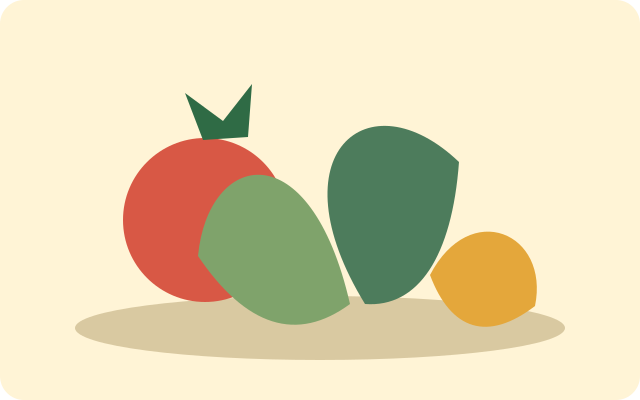
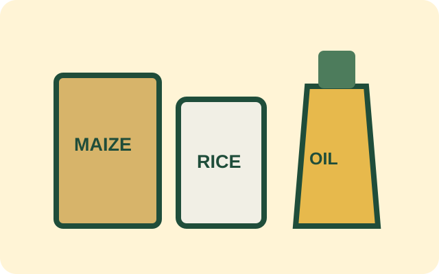
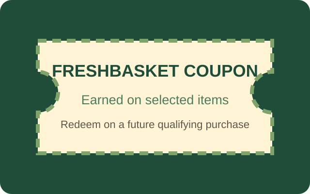

Products and selected specials
The examples below are proposed content for the fictional store. Final products, prices and availability will be confirmed before publication.
Fresh produce

- Seasonal vegetables from suitable local farmers
- Fresh fruit subject to seasonal availability
- Herbs and prepared vegetable packs
Pantry and everyday food

- Maize meal, rice, flour and sugar
- Cooking oil, canned food and sauces
- Milk, bread, eggs and selected frozen products
Household essentials
- Cleaning products
- Personal-care basics
- Paper products and everyday household supplies
Selected-item specials
Specials will be dated clearly so customers know when an offer starts and ends. Customers can use the stock enquiry form to check availability.
FreshBasket coupons

Customers will earn coupons when purchasing selected items. A coupon may be redeemed during a later qualifying purchase. Exact qualifying products, expiry dates and terms will be displayed clearly before the coupon programme launches.